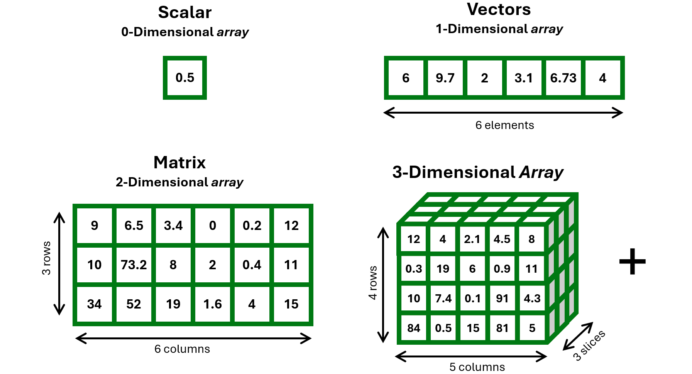

import numpy as npMost data science pipelines in Python rely on these two packages, as base Python lacks built-in data structures like vectors (with vectorized operations), matrices / arrays, and data frames
numpy: provides efficient numerical computing (homogeneous arrays, vectorized operations) and many mathematical, algebraic, and basic statistical functions;pandas: provides fundamental data structures for tabular data (DataFrames), with convenient indexing, reshaping, and data manipulation tools;Remember the concept of “array” from Basics of R for Data Science?

Example of 1-D array
Example of 2-D array (aka matrix, structured as a list of equally-long lists)
Unlike basic lists, arrays are homogenous and support fast vectorized operations, e.g., np.sqrt(x), x+5, x**2, etc.
array([[ 90., 65., 34., 0., 2., 120.],
[100., 732., 80., 20., 4., 110.],
[340., 520., 190., 16., 40., 150.]])different ways of doing the same thing (with functions vs methods):
array([[3. , 2.5495, 1.8439, 0. , 0.4472, 3.4641],
[3.1623, 8.5557, 2.8284, 1.4142, 0.6325, 3.3166],
[5.831 , 7.2111, 4.3589, 1.2649, 2. , 3.873 ]])[ 6 8 10 12][ 5 12 21 32]70np.array() conceptually very similar to the c() and array() objects of R.np.array() is stricter in enforcing data types (which is what allows it to be so efficient for numerical computations, but also makes it a bit less flexible)some array’s attributes you can inspect
dtype('float64')dtype('int64')dtype('<U2')dtype('<U12')dtype('<U21')Even with characters!
Actually, this “strictness” is part of the secret of what makes Python numpy so efficient… but be careful!
How do you avoid this silent coercion? Explicitly state the data type from the beginning!
array([ 3.14159, 11. , 12. , 13. , 14. ])1-D arrays (vectors)
np.int64(10)np.int64(60)np.int64(50)array([20, 30, 40])array([20, 30, 40, 50, 60])array([10, 20, 30])2-D arrays (matrices)
np.int64(5)np.int64(8)array([1, 2, 3, 4])array([2, 3])array([1, 5])array([[3, 4],
[7, 8]])Pandas SeriesSeries are essentially like 1D numpy arrays, but labelled with keys
Pandas DataFrame ❤️Pandas’ DataFrame is the classical tabular object we are familiar with: it’s practically a special type of Python dict (dictionary), composed of equally-long, internally-homogeneous, labelled lists
myDF = pd.DataFrame( {
"teacher": ["Pastore", "Granziol", "Feraco", "Altoe", "Marci"],
"course": ["CurrentIssues", "BasicsInference", "SEM", "Outliers", "QMP"],
"hours": [10, 20, 20, 5, 5],
"mandatory": [True, True, False, False, True],
"semester": [1, 1, 2, 2, 2]
} , index=["t1","t2","t3","t4","t5"])
myDF teacher course hours mandatory semester
t1 Pastore CurrentIssues 10 True 1
t2 Granziol BasicsInference 20 True 1
t3 Feraco SEM 20 False 2
t4 Altoe Outliers 5 False 2
t5 Marci QMP 5 True 2(5, 5)Index(['teacher', 'course', 'hours', 'mandatory', 'semester'], dtype='object')<class 'pandas.core.frame.DataFrame'>
Index: 5 entries, t1 to t5
Data columns (total 5 columns):
# Column Non-Null Count Dtype
--- ------ -------------- -----
0 teacher 5 non-null object
1 course 5 non-null object
2 hours 5 non-null int64
3 mandatory 5 non-null bool
4 semester 5 non-null int64
dtypes: bool(1), int64(2), object(2)
memory usage: 205.0+ bytesteacher object
course object
hours int64
mandatory bool
semester int64
dtype: object hours semester
count 5.000000 5.000000
mean 12.000000 1.600000
std 7.582875 0.547723
min 5.000000 1.000000
25% 5.000000 1.000000
50% 10.000000 2.000000
75% 20.000000 2.000000
max 20.000000 2.000000about equivalent to str() and summary() in R
teacher course hours mandatory semester
t1 Pastore CurrentIssues 10 True 1
t2 Granziol BasicsInference 20 True 1
t3 Feraco SEM 20 False 2
t4 Altoe Outliers 5 False 2
t5 Marci QMP 5 True 2 teacher course hours mandatory semester
t1 Pastore CurrentIssues 10 True 1
t2 Granziol BasicsInference 20 True 1
t3 Feraco SEM 20 False 2
t4 Altoe Outliers 5 False 2
t5 Marci QMP 5 True 2 teacher course hours mandatory semester
t1 Pastore CurrentIssues 10 True 1
t2 Granziol BasicsInference 20 True 1
t3 Feraco SEM 20 False 2
t4 Altoe Outliers 5 False 2
t5 Marci QMP 5 True 2 teacher course hours mandatory semester
t1 Pastore CurrentIssues 10 True 1
t2 Granziol BasicsInference 20 True 1
t3 Feraco SEM 20 False 2
t4 Altoe Outliers 5 False 2
t5 Marci QMP 5 True 2 teacher course hours mandatory semester
t1 Pastore CurrentIssues 10 True 1
t2 Granziol BasicsInference 20 True 1
t3 Feraco SEM 20 False 2
t4 Altoe Outliers 5 False 2
t5 Marci QMP 5 True 2 teacher course hours mandatory semester
t1 Pastore CurrentIssues 10 True 1
t2 Granziol BasicsInference 20 True 1
t3 Feraco SEM 20 False 2
t4 Altoe Outliers 5 False 2
t5 Marci QMP 5 True 2Access rows by position
teacher course hours mandatory semester
t1 Pastore CurrentIssues 10 True 1
t2 Granziol BasicsInference 20 True 1
t3 Feraco SEM 20 False 2
t4 Altoe Outliers 5 False 2
t5 Marci QMP 5 True 2
this is very similar to indexing using myDF[0,0] or myDF[0,"teacher"] in R
If you don’t like the row index, drop it!
teacher course hours mandatory semester
0 Pastore CurrentIssues 10 True 1
1 Granziol BasicsInference 20 True 1
2 Feraco SEM 20 False 2
3 Altoe Outliers 5 False 2
4 Marci QMP 5 True 2
by default, rows have no names, and row names are not strictly needed in a DataFrame; without names, integer are used for indexing rows even using .loc[], which makes it more similar to R
teacher course hours mandatory semester
0 Pastore CurrentIssues 10 True 1
1 Granziol BasicsInference 20 True 1
2 Feraco SEM 20 False 2
3 Altoe Outliers 5 False 2
4 Marci QMP 5 True 2 teacher course hours mandatory semester
1 Granziol BasicsInference 20 True 1
2 Feraco SEM 20 False 2 teacher course hours mandatory semester
0 Pastore CurrentIssues 10 True 1 teacher course hours mandatory semester
0 Pastore CurrentIssues 10 True 1
1 Granziol BasicsInference 20 True 1 teacher course hours mandatory semester
0 Pastore CurrentIssues 10 True 1
1 Granziol BasicsInference 20 True 1
2 Feraco SEM 20 False 2
3 Altoe Outliers 5 False 2
4 Marci QMP 5 True 2 teacher course
1 Granziol BasicsInference
2 Feraco SEM teacher course
0 Pastore CurrentIssues teacher course
0 Pastore CurrentIssues
1 Granziol BasicsInference teacher course hours mandatory semester
0 Pastore CurrentIssues 10 True 1
1 Granziol BasicsInference 20 True 1
2 Feraco SEM 20 False 2
3 Altoe Outliers 5 False 2
4 Marci QMP 5 True 2 teacher course
1 Granziol BasicsInference
2 Feraco SEM teacher course
0 Pastore CurrentIssues teacher course
0 Pastore CurrentIssues
1 Granziol BasicsInferenceActually, this is the most recommended! especially for data manipulation
teacher course hours mandatory semester
0 Pastore CurrentIssues 10 True 1
1 Granziol BasicsInference 20 True 1
2 Feraco SEM 20 False 2
3 Altoe Outliers 5 False 2
4 Marci QMP 5 True 2 teacher course hours mandatory semester
0 Pastore CurrentIssues 10 True 1
1 Granziol BasicsInference 20 True 1
2 Feraco SEM 20 False 2
3 Altoe Outliers 5 False 2
4 Marci QMP 5 True 2Just index a column that doesn’t exist… and fill it!
teacher course hours mandatory semester wellBoh
0 Pastore CurrentIssues 10 True 1 50.792
1 Granziol BasicsInference 20 True 1 50.037
2 Feraco SEM 20 False 2 50.533
3 Altoe Outliers 5 False 2 50.074
4 Marci QMP 5 True 2 51.010Python pandas) vs data.frame (R)| Task | Python (pandas) |
R |
|---|---|---|
| Select column | df["var"] |
df["var"] |
| Select column | df.var |
df$var |
| Multiple columns | df[["a", "b"]] |
df[, c("a", "b")] |
| Filter rows | df[df["var"] > 0] |
df[df$var > 0, ] |
| Add column | df["newVar"] = ... |
df$newVar = ... |
| Modify column | df["var"] = df["var"]+10 df["var"] += 10 |
df$var = df$var+10 |
| Summary | df.describe() |
summary(df) |
| Row access | df.loc[0] |
df[1, ] |
| Cell access | df.loc[0, "var"] |
df[1, "var"] |
| Cell access | df.iloc[0, 2] |
df[1, 3] |
pd.merge()) ID department age grade
0 Jane dpg 21.4 23
1 Jim dpg 22.5 28
2 John dpss 20.2 30
3 Jack dpss 23.0 15"name"! otherwise, add argument how="outer" to keep all values and possibly fill with NaN (missing values)
pd.concat())dfDPG = pd.DataFrame({
"name": ["Jane", "Jim"],
"grade": [28, 15],
"department": ["dpg", "dpg"]
})
dfDPG name grade department
0 Jane 28 dpg
1 Jim 15 dpgdfDPSS = pd.DataFrame({
"name": ["John", "Jack"],
"grade": [30, 23],
"department": ["dpss", "dpss"]
})
dfDPSS name grade department
0 John 30 dpss
1 Jack 23 dpss.melt()) ID gender age T0 T1
0 id01 m 22 -2.31 -1.50
1 id02 m 20 -1.70 -0.86
2 id03 f 23 -2.64 -2.30 ID gender age TIME SCORE
0 id01 m 22 T0 -2.31
1 id02 m 20 T0 -1.70
2 id03 f 23 T0 -2.64
3 id01 m 22 T1 -1.50
4 id02 m 20 T1 -0.86
5 id03 f 23 T1 -2.30.pivot()) ID gender age TIME SCORE
0 id01 m 22 T0 -2.31
1 id01 m 22 T1 -1.50
2 id02 m 20 T0 -1.70
3 id02 m 20 T1 -0.86
4 id03 f 23 T0 -2.64
5 id03 f 23 T1 -2.30TIME ID gender age T0 T1
0 id01 m 22 -2.31 -1.50
1 id02 m 20 -1.70 -0.86
2 id03 f 23 -2.64 -2.30.groupby()) teacher course hours mandatory semester wellBoh
0 Pastore CurrentIssues 10 True 1 50.792
1 Granziol BasicsInference 20 True 1 100050.037
2 Feraco SEM 20 False 2 100050.533
3 Altoe Outliers 5 False 2 50.074
4 Marci QMP 5 True 2 51.010.groupby()) hours wellBoh
semester
1 30 100100.829
2 30 100151.617 hours wellBoh
semester
1 15.0 50050.414500
2 10.0 33383.872333 hours wellBoh
semester
1 7.071068 70710.144253
2 8.660254 57735.021725.agg() hours wellBoh
mean 12.00 40050.49
std 7.58 54772.07
min 5.00 50.07
max 20.00 100050.53myDF.groupby("semester").agg({"hours": ["mean","std","min","max"],
"wellBoh": ["mean","std","min","max"]
}).round(2) hours wellBoh
mean std min max mean std min max
semester
1 15.0 7.07 10 20 50050.41 70710.14 50.79 100050.04
2 10.0 8.66 5 20 33383.87 57735.02 50.07 100050.53